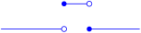
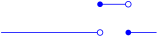
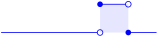

Section 8.1 Sequences
Subsection 8.1.1 Sequences
In the discussion above we used the term “sequence” without giving it a precise mathematical meaning. Let us rectify this now.
Definition 8.1.1.
A sequence is a list of infinitely 1 many numbers with a specified order. It is denoted
We will often specify a sequence by writing it more explicitly, like
where \(f(n)\) is some function from the natural numbers to the real numbers.
Example 8.1.2. Three sequences and another one.
Here are three sequences.
It is not necessary that there be a simple explicit formula for the \(n^{\rm th}\) term of a sequence. For example the decimal digits of \(\pi\) is a perfectly good sequence
but there is no simple formula 2 for the \(n^{\rm th}\) digit.
Our primary concern with sequences will be the behaviour of \(a_n\) as \(n\) tends to infinity and, in particular, whether or not \(a_n\) “settles down” to some value as \(n\) tends to infinity.
Definition 8.1.3.
A sequence \(\big\{a_n\big\}_{n=1}^\infty\) is said to converge to the limit \(A\) if \(a_n\) approaches \(A\) as \(n\) tends to infinity. If so, we write
A sequence is said to converge if it converges to some limit. Otherwise it is said to diverge.
The reader should immediately recognise the similarity with limits at infinity
Example 8.1.4. Convergence in Example 8.1.2.
Three of the four sequences in Example 8.1.2 diverge:
- The sequence \(\big\{a_n=n\big\}_{n=1}^\infty\) diverges because \(a_n\) grows without bound, rather than approaching some finite value, as \(n\) tends to infinity.
- The sequence \(\big\{a_n=(-1)^{n-1}\big\}_{n=1}^\infty\) diverges because \(a_n\) oscillates between \(+1\) and \(-1\) rather than approaching a singe value as \(n\) tends to infinity.
- The sequence of the decimal digits of \(\pi\) also diverges, though the proof that this is the case is a bit beyond us right now 3 .
The other sequence in Example 8.1.2 has \(a_n=\frac{1}{n}\text{.}\) As \(n\) tends to infinity, \(\frac{1}{n}\) tends to zero. So
Example 8.1.5. \(\lim\limits_{n\rightarrow\infty}\frac{n}{2n+1}\).
Here is a little less trivial example. To study the behaviour of \(\frac{n}{2n+1}\) as \(n\rightarrow\infty\text{,}\) it is a good idea to write it as
As \(n\rightarrow\infty\text{,}\) the \(\frac{1}{n}\) in the denominator tends to zero, so that the denominator \(2+\frac{1}{n}\) tends to \(2\) and \(\frac{1}{2+\frac{1}{n}}\) tends to \(\frac{1}{2}\text{.}\) So
Notice that in this last example, we are really using techniques that we used before to study infinite limits like \(\ds \lim_{x\rightarrow\infty}f(x)\text{.}\) This experience can be easily transferred to dealing with \(\lim\limits_{n\rightarrow\infty}a_n\) limits by using the following result.
Theorem 8.1.6.
If
and if \(a_n=f(n)\) for all positive integers \(n\text{,}\) then
Example 8.1.7. \(\lim\limits_{n\rightarrow\infty}e^{-n}\).
Set \(f(x)=e^{-x}\text{.}\) Then \(e^{-n}=f(n)\) and
The bulk of the rules for the arithmetic of limits of functions that you already know also apply to the limits of sequences. That is, the rules you learned to work with limits such as \(\ds \lim_{x\rightarrow\infty}f(x)\) also apply to limits like \(\ds\lim_{n\rightarrow\infty}a_n\text{.}\)
Theorem 8.1.8. Arithmetic of limits.
Let \(A\text{,}\) \(B\) and \(C\) be real numbers and let the two sequences \(\big\{a_n\big\}_{n=1}^\infty\) and \(\big\{b_n\big\}_{n=1}^\infty\) converge to \(A\) and \(B\) respectively. That is, assume that
Then the following limits hold.
-
\(\ds \lim_{n \to \infty} \big[a_n+b_n\big] = A+B\)
(The limit of the sum is the sum of the limits.)
-
\(\ds \lim_{n \to \infty} \big[a_n-b_n\big] = A-B\)
(The limit of the difference is the difference of the limits.)
- \(\ds \lim_{n \to \infty} C a_n = C A\text{.}\)
-
\(\ds \lim_{n \to \infty} a_n\,b_n = A\,B\)
(The limit of the product is the product of the limits.)
-
If \(B \neq 0\) then \(\ds \lim_{n \to \infty}\frac{a_n}{b_n} = \frac{A}{B}\)
(The limit of the quotient is the quotient of the limits provided the limit of the denominator is not zero.)
We use these rules to evaluate limits of more complicated sequences in terms of the limits of simpler sequences — just as we did for limits of functions.
Example 8.1.9. Arithmetic of limits.
Combining Examples 8.1.5 and 8.1.7,
There is also a squeeze theorem for sequences.
Theorem 8.1.10. Squeeze theorem.
If \(a_n\le c_n\le b_n\) for all natural numbers \(n\text{,}\) and if
then
Example 8.1.11. A simple squeeze.
In this example we use the squeeze theorem to evaluate
where \(\pi_n\) is the \(n^{\mathrm{th}}\) decimal digit of \(\pi\text{.}\) That is,
We do not have a simple formula for \(\pi_n\text{.}\) But we do know that
and we also know that
So the squeeze theorem with \(a_n=1\text{,}\) \(b_n=1+\frac{\pi_n}{n}\text{,}\) and \(c_n=1+\frac{9}{n}\) gives
Finally, recall that we can compute the limit of the composition of two functions using continuity. In the same way, we have the following result:
Theorem 8.1.12. Continuous functions of limits.
If \(\lim\limits_{n\rightarrow\infty}a_n=L \) and if the function \(g(x)\) is continuous at \(L\text{,}\) then
Example 8.1.13. \(\lim\limits_{n\rightarrow\infty}\sin\frac{\pi n}{2n+1}\).
Write \(\sin\frac{\pi n}{2n+1}=g\big(\frac{n}{2n+1}\big)\) with \(g(x)=\sin(\pi x)\text{.}\) We saw, in Example 8.1.5 that
Since \(g(x) = \sin (\pi x)\) is continuous at \(x=\frac{1}{2}\text{,}\) which is the limit of \(\frac{n}{2n+1}\text{,}\) we have
With this introduction to sequences and some tools to determine their limits, we can now return to the problem of understanding infinite sums.
Exercises 8.1.2 Exercises
1.
Assuming the sequences continue as shown, estimate the limit of each sequence from its graph.

Not every limit exists.
(a) \(-2\qquad\)(b) \(0\qquad\) (c) the limit does not exist
(a) The values of the sequence seem to be getting closer and closer to -2, so we guess the limit of this sequence is -2.
(b) Overall, the values of the sequence seem to be getting extremely close to 0, so we approximate the limit of this sequence as 0. It doesn't matter that the sequence changes signs, or that the numbers are sometimes farther from 0, sometimes closer.
(c) This limit does not exist. The sequence is sometimes 0, sometimes -2, and not consistently staying extremely near to either one.
2.
Suppose \(a_n\) and \(b_n\) are sequences, and \(a_n=b_n\) for all \(n \geq 100\text{,}\) but \(a_n \neq b_n\) for \(n \lt 100\text{.}\)
True or false: \(\displaystyle\lim_{n \to \infty} a_n = \lim_{n \to \infty} b_n\text{.}\)
3.
Let \(\{a_n\}_{n=1}^{\infty}\text{,}\) \(\{b_n\}_{n=1}^{\infty}\text{,}\) and \(\{c_n\}_{n=1}^{\infty}\text{,}\) be sequences with \(\lim\limits_{n \to \infty}a_n=A\text{,}\) \(\lim\limits_{n \to \infty}b_n=B\text{,}\) and \(\lim\limits_{n \to \infty}c_n=C\text{.}\) Assume \(A\text{,}\) \(B\text{,}\) and \(C\) are nonzero real numbers.
Evaluate the limits of the following sequences.
- \(\displaystyle \dfrac{a_n-b_n}{c_n}\)
- \(\displaystyle \dfrac{c_n}{n}\)
- \(\displaystyle \dfrac{a_{2n+5}}{b_n}\)
\(\displaystyle\lim_{n \to \infty}a_{2n+5}=\lim_{n \to \infty}a_{n}\)
(a) \(\dfrac{A-B}{C}\qquad\) (b) \(0\qquad\) (c) \(\dfrac{A}{B}\)
(a) We follow the arithmetic of limits, Theorem 8.1.8: \(\dfrac{A-B}{C}\)
(b) Since \(\lim\limits_{n \to \infty}{c_n}\) is some real number, and \(n\) grows without bound, \(\lim\limits_{n \to \infty}\dfrac{c_n}{n}=0\text{.}\)
(c) We note \(\displaystyle\lim_{n \to \infty}a_{2n+5}=\lim_{n \to \infty}a_{n}\text{,}\) so \(\displaystyle\dfrac{a_{2n+5}}{b_n} = \frac{A}{B}\text{.}\)
4.
Give an example of a sequence \(\{a_n\}_{n=1}^{\infty}\) with the following properties:
- \(a_n \gt 1000\) for all \(n \leq 1000\text{,}\)
- \(a_{n+1} \lt a_n\) for all \(n\text{,}\) and
- \(\displaystyle \lim\limits_{n \to \infty} a_n = -2\)
The sequence might be defined by different functions when \(n\) is large than when \(n\) is small.
Two possible answers, of many:
- \(\displaystyle a_n = \begin{cases} 3000-n & \text{ if }n \leq 1000\\ -2+\frac{1}{n} & \text{ if }n \gt 1000 \end{cases}\)
- \(\displaystyle a_n=\dfrac{1,002,001}{n}-2\)
There are many possible answers. One is:
where we have a series that looks different before and after its thousandth term. Note every term is smaller than the term preceding it.
Another sequence with the desired properties is:
When \(n \leq 1000\text{,}\) \(a_n \geq \frac{1,002,001}{1000}-2 \gt \frac{1,002,000}{1,000}-2=1000\text{.}\) That is, \(a_n \gt 1000\) when \(n \le 1000\text{.}\) As \(n\) gets larger, \(a_n\) gets smaller, so \(a_{n+1} \lt a_n\) for all \(n\text{.}\) Finally, \(\lim\limits_{n \to \infty} a_n = 0-2=-2\text{.}\)
5.
Give an example of a sequence \(\{a_n\}_{n=1}^{\infty}\) with the following properties:
- \(a_n \gt 0\) for all even \(n\text{,}\)
- \(a_n \lt 0\) for all odd \(n\text{,}\)
- \(\lim\limits_{n \to \infty} a_n\) does not exist.
Recall \((-1)^n\) is positive when \(n\) is even, and negative when \(n\) is odd.
One possible answer is \(a_n=(-1)^{n} = \{-1, 1,-1,1,-1,1,-1,\ldots\}\text{.}\)
Another is \(a_n=n(-1)^{n} = \{-1, 2,-3,4,-5,6,-7,\ldots\}\text{.}\)
One possible answer is \(a_n=(-1)^{n} = \{-1, 1,-1,1,-1,1,-1,\ldots\}\text{.}\)
Another is \(a_n=n(-1)^{n} = \{-1, 2,-3,4,-5,6,-7,\ldots\}\text{.}\)
6.
Give an example of a sequence \(\{a_n\}_{n=1}^{\infty}\) with the following properties:
- \(a_n \gt 0\) for all even \(n\text{,}\)
- \(a_n \lt 0\) for all odd \(n\text{,}\)
- \(\lim\limits_{n \to \infty} a_n\) exists.
Modify your answer from Question 5, but make the terms approach zero.
One sequence of many possible is \(\displaystyle a_n = \frac{(-1)^n}{n} = \left\{-1,\ \frac12,\ -\frac13,\ \frac14,\ -\frac15,\ \frac16,\ \ldots \right\}\text{.}\)
If the terms of a sequence are alternating sign, but the limit of the sequence exists, the limit must be zero. (If it were a positive number, the negative terms would not get very close to it; if it were a negative number, the positive terms would not get very close to it.)
This gives us the idea to modify an answer from Question 5. One possible sequence:
7.
The limits of the sequences below can be evaluated using the squeeze theorem. For each sequence, choose an upper bounding sequence and lower bounding sequence that will work with the squeeze theorem. You do not have to evaluate the limits.
- \(\displaystyle a_n = \dfrac{\sin n}{n}\)
- \(\displaystyle b_n = \dfrac{n^2}{e^n(7+\sin n - 5\cos n)}\)
- \(\displaystyle c_n = (-n)^{-n}\)
\((-n)^{-n} = \dfrac{(-1)^n}{n^n}\)
Some possible answers:
- \(\displaystyle \dfrac{-1}{n}\le \dfrac{\sin n}{n}\le \dfrac{1}{n}\)
- \(\displaystyle \dfrac{n^2}{13e^n} \le \dfrac{n^2}{e^n(7+\sin n - 5\cos n)} \le \dfrac{n^2}{e^n}\)
- \(\displaystyle \dfrac{-1}{n^n} \le (-n)^{-n} \le \dfrac{1}{n^n}\)
- Since \(-1 \leq \sin n \leq 1\) for all \(n\text{,}\) one potential set of upper and lower bound is\begin{equation*} \dfrac{-1}{n}\le \dfrac{\sin n}{n}\le \dfrac{1}{n} \end{equation*}Note \(\lim\limits_{n \to \infty}\dfrac{-1}{n} = \lim\limits_{n \to \infty}\dfrac{1}{n}\text{,}\) so these are valid comparison sequences for the squeeze theorem.
- Since \(\textcolor{red}{-1\leq \sin n \leq 1}\) and \(\textcolor{blue}{-5 \leq -5\cos n \leq 5}\) for all \(n\text{,}\) we see\begin{align*} 7\textcolor{red}{-1}\textcolor{blue}{-5}&\leq 7+\textcolor{red}{\sin n} -\textcolor{blue}{ 5 \cos n} \leq 7+\textcolor{red}1+\textcolor{blue}5\\ 1&\leq 7+\textcolor{red}{\sin n} -\textcolor{blue}{ 5 \cos n} \leq13 \end{align*}This gives us the idea to try the bounds\begin{equation*} \dfrac{n^2}{13e^n} \le \dfrac{n^2}{e^n(7+\sin n - 5\cos n)} \le \dfrac{n^2}{e^n} \end{equation*}We check that \(\lim\limits_{n \to \infty}\dfrac{n^2}{13e^n} = \lim\limits_{n \to \infty}\dfrac{n^2}{e^n} \) (they're both 0 — you can verify using l'Hôpital's rule), so these are indeed reasonable bounds to choose to use with the squeeze theorem.
- Since \((-n)^{-n} = \dfrac{1}{(-n)^n} = \dfrac{(-1)^n}{n^n}\text{,}\) we see\begin{equation*} \dfrac{-1}{n^n} \le (-n)^{-n} \le \dfrac{1}{n^n} \end{equation*}Since both \(\lim\limits_{n \to \infty}\dfrac{-1}{n^n} \) and \(\lim\limits_{n \to \infty}\dfrac{1}{n^n} \) are 0, these are reasonable bounds to use with the squeeze theorem.
8.
Below is a list of sequences, and a list of functions.
- Match each sequence \(a_n\) to any and all functions \(f(x)\) such that \(f(n)=a_n\) for all whole numbers \(n\text{.}\)
- Match each sequence \(a_n\) to any and all functions \(f(x)\) such that \(\displaystyle\lim_{n \to \infty}a_n = \lim_{x \to \infty}f(x)\text{.}\)
What might cause your answers in (a) and (b) to differ? Carefully read Theorem 8.1.6 about convergent functions and their corresponding sequences.
(a) \(a_n=b_n=h(n)=i(n)\text{,}\) \(c_n = j(n)\text{,}\) \(d_n=f(n)\text{,}\) \(e_n=g(n)\)
(b) \(\lim\limits_{n \to \infty} a_n=\lim\limits_{n \to \infty} b_n = \lim\limits_{x \to \infty} h(x)=1\text{,}\) \(\lim\limits_{n \to \infty} c_n=\lim\limits_{n \to \infty} e_n=\lim\limits_{x \to \infty} g(x) = \lim\limits_{x \to \infty} j(x) =0\text{,}\) \(\lim\limits_{n \to \infty} d_n\text{,}\) \(\lim\limits_{x\rightarrow\infty} f(x)\) and \(\lim\limits_{x\rightarrow\infty} i(x)\) do not exist.
- Note \(a_n=b_n\text{,}\) since (in the absence of evidence to the contrary) we assume \(n\) begins at one, hence \(n=|n|\text{.}\) Then \(a_n=b_n=1+\dfrac{1}{n}=\dfrac{n+1}{n}\text{.}\) So, whenever \(n\) is a whole number, \(a_n\) and \(b_n\) are the same as \(h(n)\) and \(i(n)\text{.}\) (Be careful here: \(h(x) \neq i(x)\) when \(x\) is not a whole number.)
- \(\displaystyle c_n=e^{-n}=\dfrac{1}{e^n}=j(n)\)
- For any integer \(n\text{,}\) \(\cos(\pi n) = (-1)^n\text{.}\) So, \(d_n = f(n)\text{.}\)
- Similarly, \(e_n=g(n)\text{.}\)
-
According to Theorem 8.1.6, if any of the functions on the right have limits that exist as \(x \to \infty\text{,}\) then these limits match the limits of their corresponding sequences. So, we only have to be suspicious of \(f(x)\) and \(i(x)\text{,}\) since these do not converge.
The limit \(\lim\limits_{x \to \infty}f(x)\) does not exist, and \(f(n)=d_n\text{;}\) the limit \(\lim\limits_{n \to \infty}d_n\) also does not exist. (We generally don't write equality for two things that don't exist: equality refers to numerical value, and these have none. 4 )
The limit \(\lim\limits_{x \to \infty}i(x)\) does not exist, because \(i(x)=0\) when \(x\) is not a whole number, while \(i(x)\) approaches 1 when \(x\) is a whole number. However, \(\lim\lim\limits_{n \to \infty}a_n=\lim\limits_{n \to \infty}b_n=1\text{.}\)
So, using our answers from part (a), we match the following:
- \(\displaystyle \lim\limits_{n \to \infty}a_n=\lim\limits_{n \to \infty}b_n=\lim\limits_{x \to \infty}h(x)=1\)
- \(\displaystyle \lim\limits_{n \to \infty}c_n=\lim\limits_{n \to \infty}e_n=\lim\limits_{x \to \infty}g(x)=\lim\limits_{x \to \infty}j(x)=0\)
- \(\lim\limits_{n \to \infty} d_n\text{,}\) \(\lim\limits_{x\rightarrow\infty} f(x)\) and \(\lim\limits_{x\rightarrow\infty} i(x)\) do not exist.
9.
Let \(\{a_n\}_{n=1}^\infty\) be a sequence defined by \(a_n = \cos n\text{.}\)
- Give three different whole numbers \(n\) that are within 0.1 of an odd integer multiple of \(\pi\text{,}\) and find the corresponding values of \(a_n\text{.}\)
- Give three different whole numbers \(n\) such that \(a_n\) is close to \(0\text{.}\) Justify your answers.
Remark: this demonstrates intuitively, though not rigorously, why \(\lim\limits_{n \to \infty}\cos n\) is undefined. We consistently find terms in the series that are close to \(-1\text{,}\) and also consistently find terms in the series that are close to 1. Contrast this to a series like \(\big\{\cos(2\pi n)\big\}\text{,}\) whose terms are always 1, and whose limit therefore is 1. It is possible to turn the ideas of this question into a rigorous proof that \(\lim\limits_{n \to \infty}\cos n\) is undefined. See the solution.
You can use the fact that \(\pi\) is somewhat close to \(\dfrac{22}{7}\text{,}\) or you can use trial and error.
(a) Some possible answers: \(a_{22}\approx -0.99996\text{,}\) \(a_{66}\approx -0.99965\text{,}\) and \(a_{110}\approx -0.99902\text{.}\)
(b) Some possible answers: \(a_{11}\approx 0.0044\text{,}\) \(a_{33}\approx -0.0133\text{,}\) and \(a_{55}\approx 0.0221\text{.}\)
The integers 11, 33, and 55 were found by approximating \(\pi\) by \(\dfrac{22}{7}\) and finding when an odd multiple of \(\dfrac{11}{7}\) (which is the corresponding approximation of \(\pi/2\)) is an integer.
(a) We want to find odd multiples of \(\pi\) that are close to integers.
-
Solution 1: One way to do that is to remember that \(\pi\) is somewhat close to \(\dfrac{22}{7}\text{.}\) Then when we multiply \(\pi\) by a multiple of 7, we should get something close to an integer. In particular, \(7\pi\text{,}\) \(21\pi\text{,}\) and \(35\pi\) should be reasonably close to \(7\left(\dfrac{22}{7}\right)=22\text{,}\) \(21\left(\dfrac{22}{7}\right)=66\text{,}\) and \(35\left(\dfrac{22}{7}\right)=110\text{,}\) respectively. We check whether they are close enough:
\begin{align*} 7\pi&\approx 21.99 &\qquad 21\pi &\approx 65.97 & \qquad 35\pi &\approx 109.96 \end{align*}So indeed, \(22\text{,}\) \(66\text{,}\) and \(110\) are all within 0.1 of some odd multiple of \(\pi\text{.}\)
Since the cosine of an odd multiple of \(\pi\) is \(-1\text{,}\) we expect all of the sequence values to be close to \(-1\text{.}\) Using a calculator:
\begin{align*} a_{22} &= \cos(22) \approx -0.99996,\\ a_{66} &= \cos(66) \approx -0.99965,\\ a_{110} &= \cos(110) \approx -0.99902 \end{align*} -
Solution 2: Alternately, we could have just listed odd multiple of \(\pi\) until we found three that are close to integers.
\begin{equation*} \begin{array}{c|c} \hline \mathbf{2k+1}&\mathbf{(2k+1)\pi}\\ \hline 1&3.14\\ 3&9.42\\ 5&15.71\\ 7&\textcolor{red}{21.99}\\ 9&28.27\\ 11&34.56\\ 13&40.84\\ 15&47.12\\ 17&53.41\\ 19&59.69\\ 21&\textcolor{red}{65.97}\\ 23&72.26\\ 25&78.54\\ 27&84.82\\ 29&91.11\\ 31&97.39\\ 33&103.67\\ 35&\textcolor{red}{109.96} \end{array} \end{equation*}Some earlier odd multiples of \(\pi\) (like \(15\pi\) and \(29\pi\)) get fairly close to integers, but not within 0.1.
(b) If \(x = \dfrac{2k+1}{\vphantom{_1}2}\pi\) for some integer \(k\) (that is, \(x\) is an odd multiple of \(\pi/2\)), then \(\cos x =0\text{.}\) So, we can either list out the first few terms of \(a_n\) until we find three that are very close to \(0\text{,}\) or we can use our approximation \(\pi\approx \dfrac{22\vphantom{^1}}{7}\) to choose values of \(n\) that are close to \(\dfrac{2k+1}{2}\pi\text{.}\)
-
Solution 1:
\begin{align*} \dfrac{2k+1}{2}\pi&\approx \frac{(2k+1)\times 22}{2\times 7}=11\frac{2k+1}{7} \end{align*}So, we expect our values to be close to integers when \(2k+1\) is a multiple of 7. For example, \(2k+1=7\text{,}\) \(2k+1=21\text{,}\) and \(2k+1=35\text{.}\)
We check:
\begin{equation*} \begin{array}{l| l| l} \mathbf{x}&\mathbf{n} & \mathbf{a_n}\\ \hline 7\times \dfrac{\pi\vphantom{^A}}{2}\approx 10.99557 & 11&a_{11}\approx0.0044 \\ 21\times \dfrac{\pi}{2} \approx 32.98672&33&a_{33}\approx-0.0133 \\ 35\times \dfrac{\pi}{2} \approx 54.97787&55& a_{55}\approx 0.0221 \\ \end{array} \end{equation*}These seem like values of \(a_n\) that are all pretty close to 0.
-
Solution 2: We could have listed the first several values of \(a_n\text{,}\) and looked for some that are close to 0.
\begin{equation*} \begin{array}{c|c} \mathbf{n}&\mathbf{a_n}\\ \hline 1&0.54\\ 2&-0.42\\ 3&-0.99\\ 4&-0.65\\ 5&0.28\\ 6&0.96\\ 7&0.75\\ 8&-0.15\\ 9&-0.91\\ 10&-0.84 \end{array} \end{equation*}Oof. Nothing very close yet. Maybe a better way is to list values of \(\frac{2k+1}{2}\pi\text{,}\) and see which ones are close to integers.
\begin{equation*} \begin{array}{c|c} \mathbf{2k+1}&\mathbf{\frac{2k+1}{2}\pi}\\ \hline 1&1.57\\ 3&4.71\\ 5&7.85\\ 7&\textcolor{red}{10.996}\\ 9&14.14\\ 11&17.28\\ 13&20.42\\ 15&23.56\\ 17&26.70\\ 19&29.85\\ 21&\textcolor{red}{32.99}\\ 23&36.13\\ 25&39.27\\ 27&42.41\\ 29&45.55\\ 31&48.69\\ 33&51.84\\ 35&\textcolor{red}{54.98} \end{array} \end{equation*}We find roughly the same candidates we did in Solution 1, depending on what we're ready to accept as “close”.
Remark: it is possible to turn the ideas of this question into a rigorous proof that \(\lim\limits_{n \to \infty}\cos n\) is undefined.
- Let, for each integer \(k\geq 1\text{,}\) \(n_k\) be the integer that is closest to \(2k\pi\text{.}\) Then \(2k\pi-\frac{1}{2}\leq n_k \leq 2k\pi+\frac{1}{2}\) so that \(\cos(n_k)\geq\cos\frac{1}{2}\geq 0.8\text{.}\) Consequently, if \(\lim\limits_{n \to \infty}\cos n=c\) exists, we must have \(c\geq 0.8\text{.}\)
- Let, for each integer \(k\geq 1\text{,}\) \(n'_k\) be the integer that is closest to \((2k+1)\pi\text{.}\) Then \((2k+1)\pi-\frac{1}{2}\leq n'_k \le (2k+1)\pi+\frac{1}{2}\) so that \(\cos(n'_k)\leq-\cos\frac{1}{2}\leq -0.8\text{.}\) Consequently, if \(\lim\limits_{n \to \infty}\cos n=c\) exists, we must have \(c\leq -0.8\text{.}\)
- It is impossible to have both \(c\geq 0.8\) and \(c\leq -0.8\text{,}\) so \(\lim\limits_{n \to \infty}\cos n\) does not exist.
10.
Determine the limits of the following sequences.
- \(\displaystyle a_n = \dfrac{3n^2-2n+5}{4n+3}\)
- \(\displaystyle b_n = \dfrac{3n^2-2n+5}{4n^2+3}\)
- \(\displaystyle c_n = \dfrac{3n^2-2n+5}{4n^3+3}\)
You can compare the leading terms, or factor a high power of \(n\) from the numerator and denominator.
(a) \(\infty\qquad\) (b) \(\dfrac{3}{4}\qquad\) (c) 0
When determining the end behaviour of rational functions, recall from last semester that we can either cancel out the highest power of \(n\) from the numerator and denominator, or skip this step and compare the highest powers of the numerator and denominator.
-
Since the numerator has a higher degree than the denominator, this sequence will diverge to positive or negative infinity; since its terms are positive for large \(n\text{,}\) its limit is (positive) infinity. (You can imagine that the numerator is growing much, much faster than the denominator, leading the terms to have a very, very large absolute value.)
Calculating the longer way:
\begin{align*} a_n &= \dfrac{3n^2-2n+5}{4n+3}\left(\dfrac{\frac1n}{\frac1n}\right)=\dfrac{3n-2+\frac5n}{4+\frac3n}\\ \lim_{n \to \infty}a_n &= \lim_{n \to \infty}\dfrac{3n-2+\frac5n}{4+\frac3n} = \lim_{n \to \infty}\dfrac{3n-2+0}{4+0} = \infty \end{align*} -
Since the numerator has the same degree as the denominator, as \(n\) goes to infinity, this sequence will converge to the ratio of their leading coefficients: \(\dfrac{3}{4}\text{.}\) (You can imagine that the numerator is growing at roughly the same rate as the denominator, so the terms settle into an almost-constant ratio.)
Calculating the longer way:
\begin{align*} b_n &= \dfrac{3n^2-2n+5}{4n^2+3}\left(\dfrac{\frac{1}{n^2}}{\frac{1}{n^2}}\right)=\dfrac{3-\frac2n+\frac{5}{n^2}}{4+\frac{3}{n^2}}\\ \lim_{n \to \infty}b_n &= \lim_{n \to \infty}\dfrac{3-\frac2n+\frac{5}{n^2}}{4+\frac{3}{n^2}} = \frac{3-0+0}{4+0}=\frac{3}{4} \end{align*} -
Since the numerator has a lower degree than the denominator, this sequence will converge to 0 as \(n\) goes to infinity. (You can imagine that the denominator is growing much, much faster than the numerator, leading the terms to be very, very small.)
Calculating the longer way:
\begin{align*} c_n &= \dfrac{3n^2-2n+5}{4n^3+3}\left(\dfrac{\frac{1}{n^3}}{\frac{1}{n^3}}\right)=\dfrac{\frac{3}{n}-\frac{2}{n^2}+\frac{5}{n^3}}{4+\frac{3}{n^3}}\\ \lim_{n \to \infty}c_n &= \lim_{n \to \infty}\dfrac{\frac{3}{n}-\frac{2}{n^2}+\frac{5}{n^3}}{4+\frac{3}{n^3}} = \dfrac{0-0+0}{4+0}=0 \end{align*}
11.
Determine the limit of the sequence \(a_n = \dfrac{4n^3-21}{n^e+\frac{1}{n}}\text{.}\)
This isn't a rational expression, but you can treat it in a similar way. Recall \(e \lt 3\text{.}\)
\(\infty\)
At first glance, we see both the numerator and denominator grow huge as \(n\) increases, so we'll need to think a little further to find the limit.
We don't have a rational function, but we can still divide the top and bottom by \(n^e\) to get a clearer picture.
Since \(e \lt 3\text{,}\) we see \(3-e\) is positive, so \(\lim\limits_{n \to \infty}n^{3-e}=\infty\text{.}\)
\begin{align*} \lim_{n \to \infty}a_n&=\lim_{n \to \infty} \dfrac{4n^{3-e}-\frac{21}{n^e}}{1+\frac{1}{n^{e+1}}} =\lim_{n \to \infty} \dfrac{4n^{3-e}-0}{1+0} = \infty \end{align*}12.
Determine the limit of the sequence \(b_n = \dfrac{\sqrt[4]{n}+1}{\sqrt{9n+3}}\text{.}\)
The techniques of evaluating limits of rational sequences are again useful here.
0
This isn't a rational sequence, but factoring out \(\sqrt{n}\) from the top and bottom will still clear things up.
13.
Determine the limit of the sequence \(c_n = \dfrac{\sin n}{n}\text{.}\)
Use the squeeze theorem.
0
First, let's start with a tempting fallacy.
The denominator grows without bound, so \(\lim\limits_{n \to \infty}\dfrac{\sin n}{n}=0\text{.}\)
It's certainly true that if the limit of the numerator is a real number, and the denominator grows without bound, then the limit of the sequence is zero. However, in our case, the limit of the numerator does not exist. To apply the limit arithmetic rules from Theorem 8.1.8, our limits must actually exist.
A better reasoning looks something like this:
The denominator grows without bound, and the numerator never gets very large, so \(\lim\limits_{n \to \infty}\dfrac{\sin n}{n}=0\text{.}\)
To quantify this reasoning more precisely, we use the squeeze theorem, Theorem 8.1.10. There are two parts to the squeeze theorem: finding two bounding functions, and making sure these functions have the same limit.
- Since \(-1\leq \sin n \leq 1\) for all \(n\text{,}\) we choose functions \(a_n = \frac{-1}{n}\) and \(b_n = \frac{1}{n}\text{.}\) Then \(a_n \leq c_n \leq b_n\) for all \(n\text{.}\)
- Both \(\lim\limits_{n \to \infty}a_n=0\) and \(\lim\limits_{n \to \infty}b_n=0\text{.}\)
So, by the squeeze theorem, \(\lim\limits_{n \to \infty}\dfrac{\sin n}{n}=0\text{.}\)
14.
Determine the limit of the sequence \(a_n = \dfrac{n^{\sin n}}{n^2}\text{.}\)
\(\displaystyle\frac{1}{n}\leq n^{\sin n}\leq n\)
0
The denominator of this sequence grows without bound. The numerator is unpredictable: imagine that \(n\) is large. When \(\sin n\) is close to \(-1\text{,}\) \(n^{\sin n}\) puts a power of \(n\) “in the denominator,” so we can have \(n^{\sin n}\) very close to 0. When \(\sin n\) is close to 1, \(n^{\sin n}\) is close to \(n\text{,}\) which is large.
To control for these variations, we'll use the squeeze theorem.
- Since \(-1 \leq \sin n \leq n\) for all \(n\text{,}\) let \(b_n = \frac{n^{-1}}{n^2} = \frac{1}{n^3}\) and \(c_n = \frac{n}{n^2}=\frac{1}{n}\text{.}\) Then \(b_n \leq a_n \leq c_n\text{.}\)
- Both \(\lim\limits_{n \to \infty}b_n=0\) and \(\lim\limits_{n \to \infty}c_n=0\text{.}\)
So, by the squeeze theorem, \(\lim\limits_{n \to \infty}\dfrac{n^{\sin n}}{n^2}=0\) as well.
Remark: we also could have used \(b_n=0\) for our lower bound, since \(a_n \geq 0\) for all \(n\text{.}\)
15.
Determine the limit of the sequence \(d_n = e^{-1/n}\text{.}\)
16.
Determine the limit of the sequence \(a_n = \dfrac{1+3\sin(n^2)-2\sin n}{n}\text{.}\)
Use the squeeze theorem.
0
-
Solution 1: Let's use the squeeze theorem. Since \(\textcolor{blue}{\sin (n^2)}\) and \(\textcolor{red}{\sin n}\) are both between \(-1\) and 1 for all \(n\text{,}\) we note:
\begin{align*} 1 +3\textcolor{blue}{(-1)}-2\textcolor{red}{(1)}&\leq 1+3\,\textcolor{blue}{\sin(n^2)}-2\,\textcolor{red}{\sin n} \leq 1 +3\textcolor{blue}{(1)}-2\textcolor{red}{(-1)}\\ -4&\leq 1+3\,{\sin(n^2)}-2\,{\sin n} \leq 6 \end{align*}This allows us to choose suitable bounding functions for the squeeze theorem.
- Let \(b_n = -\dfrac{4}{n}\) and \(c_n = \dfrac{6}{n}\text{.}\) From the work above, we see \(b_n \leq a_n \leq c_n\) for all \(n\text{.}\)
- Both \(\lim\limits_{n \to \infty}b_n=0\) and \(\lim\limits_{n \to \infty}c_n=0\text{.}\)
So, by the squeeze theorem, \(\lim\limits_{n \to \infty} \dfrac{1+3\sin(n^2)-2\sin n}{n}=0\text{.}\)
-
Solution 2: We simplify slightly to begin.
\begin{align*} a_n &= \dfrac{1+3\sin(n^2)-2\sin n}{n} = \dfrac{1}{n}+3\cdot\frac{\sin (n^2)}{n} - 2\cdot\frac{\sin n}{n} \end{align*}We apply the squeeze theorem to the pieces \(\textcolor{blue}{\dfrac{\sin (n^2)}{n} }\) and \(\textcolor{red}{\dfrac{\sin n}{n}}\text{.}\)
- Let \(b_n = \dfrac{-1}{n}\) and \(c_n = \dfrac{1}{n}\text{.}\) Then \(\textcolor{blue}{b_n \leq \dfrac{\sin (n^2)}{n} \leq c_n}\text{,}\) and \(\textcolor{red}{ b_n \leq \dfrac{\sin n}{n} \leq c_n }\text{.}\)
- Both \(\lim\limits_{n \to \infty} b_n=0\) and \(\lim\limits_{n \to \infty} c_n=0\text{.}\)
So, by the squeeze theorem, \(\textcolor{blue}{ \lim\limits_{n \to \infty}\dfrac{\sin (n^2)}{n} =0 }\) and \(\textcolor{red}{ \lim\limits_{n \to \infty}\dfrac{\sin n}{n}=0 }\text{.}\)
Now, using the arithmetic of limits from Theorem 8.1.8,
\begin{align*} \lim_{n \to \infty}a_n &=\lim_{n \to \infty}\left[ \dfrac{1}{n}+3\cdot\frac{\sin (n^2)}{n} - 2\cdot\frac{\sin n}{n}\right]\\ &=0+3\cdot 0 - 2\cdot 0 =0 \end{align*}
17.
Determine the limit of the sequence \(b_n=\dfrac{e^n}{2^n+n^2}\text{.}\)
L'Hôpital's rule might help you decide what happens if you are unsure.
\(\infty\)
First, we note that both numerator and denominator grow without bound. So, we have to decide whether one outstrips the other, or whether they reach a stable ratio.
-
Solution 1: Let's try dividing the numerator and denominator by \(2^n\) (the dominant term in the denominator; this is the same idea behind factoring out the leading term in rational expressions).
\begin{equation*} b_n = \frac{e^n}{2^n+n^2}\left(\frac{\frac{1}{2^n}}{\frac{1}{2^n}}\right) = \frac{\left(\frac{e}{2}\right)^n}{1+\frac{n^2}{2^n}} \end{equation*}Since \(e \gt 2\text{,}\) we see \(\dfrac{e}{2} \gt 1\text{,}\) and so \(\lim\limits_{n \to \infty}\left(\dfrac{e}{2}\right)^n=\infty\text{.}\) Since exponential functions grow much, much faster than polynomial functions, we also see \(\lim\limits_{n \to \infty}\frac{n^2}{2^n}=0\text{.}\) So,
\begin{equation*} \lim\limits_{n \to \infty}b_n = \lim\limits_{n \to \infty} \frac{\left(\frac{e}{2}\right)^n}{1+\frac{n^2}{2^n}} = \lim\limits_{n \to \infty} \frac{\left(\frac{e}{2}\right)^n}{1+0} = \infty \end{equation*} -
Solution 2: Since the numerator and denominator both increase without bound, we apply l'Hôpital's rule. Recall \(\diff{}{x}\{2^x\} = 2^x\log 2\text{.}\)
\begin{align*} \lim_{n \to \infty}b_n&=\lim_{n \to \infty}\underbrace{\dfrac{e^n}{2^n+n^2}}_{\atp{\mathrm{num}\to \infty}{\mathrm{den}\to\infty}}\\ &=\lim_{n \to \infty}\underbrace{\frac{e^n}{2^n\log 2 + 2n}}_{\atp{\mathrm{num}\to \infty}{\mathrm{den}\to\infty}}\\ &=\lim_{n \to \infty} \underbrace{\frac{e^n}{2^n(\log 2)^2 + 2}}_{\atp{\mathrm{num}\to\infty}{\mathrm{den}\to\infty}}\\ &=\lim_{n \to \infty}\frac{e^n}{2^n(\log 2)^3}\\ &=\frac{1}{(\log 2)^3}\lim_{n \to \infty}{\left(\frac{e}{2}\right)^n}\\ &=\infty \end{align*}Since \(e \gt 2\text{,}\) we see \(\dfrac{e}{2} \gt 1\text{,}\) and so \(\lim\limits_{n \to \infty}\left(\dfrac{e}{2}\right)^n=\infty\text{.}\)
18. M105 2012A.
Find the limit, if it exists, of the sequence \(\big\{a_k\big\}\text{,}\) where
Simplify \(a_k\text{.}\)
\(\lim\limits_{k\rightarrow\infty}a_k= 0\text{.}\)
First, we simplify. Remember \(n! = n(n-1)(n-2)\cdots(2)(1)\) for any whole number \(n\text{,}\) so \((k+1)!=(k+1)k!\) .
Now, we can use the squeeze theorem.
- \(-1 \leq \sin k \leq 1\) for all \(k\text{,}\) so \(-1 \leq \sin^3k \leq 1\text{.}\) Let \(b_k = \frac{-1}{k+1}\) and \(c_k = \frac{1}{k+1}\text{.}\) Then \(b_k \leq a_k \leq c_k\text{.}\)
- Both \(\lim\limits_{k \to \infty}b_k=0\) and \(\lim\limits_{k \to \infty}c_k=0\text{.}\)
So, by the squeeze theorem, also \(\displaystyle\lim_{k\to\infty} a_k=0\text{.}\)
19. 2013A.
Consider the sequence \(\Big\{(-1)^n\sin\big(\frac{1}{n}\big)\Big\}\text{.}\) State whether this sequence converges or diverges, and if it converges give its limit.
What happens to \(\dfrac{1}{n}\) as \(n\) gets very big?
The sequence converges to \(0\text{.}\)
Note \(\lim\limits_{n\to \infty} (-1)^n\) doesn't exist, but \(-1 \leq (-1)^n\leq 1\) for all \(n\text{.}\) Let's use the squeeze theorem.
- Let \(a_n=-\sin\left(\frac{1}{n}\right)\) and \(b_n=\sin\left(\frac{1}{n}\right)\text{.}\) Then \(a_n\leq (-1)^n\sin\left(\frac{1}{n}\right) \leq b_n\text{.}\)
- Both \(\lim\limits_{n \to \infty} -\sin\left(\frac{1}{n}\right)=0\) and \(\lim\limits_{n \to \infty} \sin\left(\frac{1}{n}\right)=0\text{,}\) since \(\lim\limits_{n \to \infty} \frac{1}{n}=0\) and \(\sin 0=0.\)
By the squeeze theorem, the sequence \(\left\{(-1)^n\sin\frac{1}{n}\right\}\) converges to \(0\text{.}\)
20. 2016Q5.
Evaluate \(\displaystyle\lim_{n\rightarrow\infty}\left[\frac{6n^2+5n}{n^2+1} +3\cos(1/n^2) \right] \text{.}\)
\(\cos 0 =1\)
\(9\)
First, we note that \(\lim\limits_{n \to \infty}\dfrac{6n^2+5n}{n^2+1}=6\text{.}\) We see this either by comparing the leading terms in the numerator and denominator, or by factoring out \(n^2\) from the top and the bottom.
Second, since \(\lim\limits_{n \to \infty}\dfrac{1}{n^2}=0\text{,}\) we see \(\lim\limits_{n \to \infty}\cos\left(\dfrac{1}{n^2}\right)=\cos0=1\text{.}\)
Using arithmetic of limits, Theorem 8.1.8, we conclude
21. M105 2015A.
Find the limit of the sequence \(\displaystyle\left\{\log\left(\sin\frac{1}{n}\right)+\log(2n)\right\} \text{.}\)
This is trickier than it looks. Write \(\dfrac{1}{n}=x\) and look at the limit as \(x\rightarrow 0\text{.}\)
\(\log 2\)
Let's take stock: \(\sin(1/n) \to \sin (0)=0\) as \(n \to \infty\text{,}\) so \(\log\left(\sin(1/n)\right) \to -\infty\text{.}\) However, \(\log(2n) \to \infty\text{.}\) So, we have some tension here: the two pieces behave in ways that pull the terms of the sequence in different directions. (Recall we cannot conclude anything like “\(-\infty+\infty=0\text{.}\)”)
We try using logarithm rules to get a clearer picture.
Still, we have indeterminate behaviour: \(2n\sin(1/n)\) is the product of \(2n\text{,}\) which grows without bound, and \(\sin(1/n)\text{,}\) which approaches zero. In the past, we learned that we can handle the indeterminate form \(0\cdot\infty\) with l'Hôpital's rule (after a little algebra), but there's a slicker way. Note \(1/n \to 0\) as \(n \to \infty\text{.}\) If we write \(\frac{1}{n}=x\text{,}\) then this piece of our limit resembles something familiar.
If \(n \to \infty\text{,}\) then \(x = \frac{1}{n}\to 0\text{.}\)
\begin{align*} \lim_{n \to \infty}2n\sin\left(\frac{1}{n}\right)&=2\lim_{x \to 0}\frac{\sin x}{x}\\ \end{align*}That limit is familiar:
\begin{align*} &=2(1)=2\\ \end{align*}Then:
\begin{align*} \lim_{n \to \infty}\log\left(2n\sin\left(\frac{1}{n}\right)\right)&=\log 2 \end{align*}Note: if you have forgotten that \(\displaystyle\lim_{x \to 0}\frac{\sin x}{x}=1\text{,}\) you can also evaluate this limit using l'Hôpital's rule:
22.
Evaluate \(\displaystyle\lim_{n \to \infty}\left[\sqrt{n^2+5n}-\sqrt{n^2-5n}\right]\text{.}\)
Multiply and divide by the conjugate.
5
First, although this sequence is not defined for some small values of \(n\text{,}\) it is defined as long as \(n \geq 5\text{,}\) so it's not a problem to take the limit as \(n \to \infty\text{.}\) Second, we notice that our limit has the indeterminate form \(\infty-\infty\text{.}\) Since this form is indeterminate, more work is needed to find our limit, if it exists.
A standard trick we saw last semester with functions of this form was to multiply and divide by the conjugate of the expression, \(\sqrt{n^2+5n}+\sqrt{n^2-5n}\text{.}\) Then the denominator will be the sum of two similar things, rather than their difference. See the work below to find out why that is helpful.
Now, we'll cancel out \(n\) from the top and the bottom. Note \(n=\sqrt{n^2}\text{.}\)
\begin{align*} &=\frac{10n}{\sqrt{n^2+5n}+\sqrt{n^2-5n}}\left(\frac{\frac1n}{\frac1n}\right)\\ &=\frac{10n}{\sqrt{n^2+5n}+\sqrt{n^2-5n}}\left(\frac{\frac1n}{\frac{1}{\sqrt{n^2}}}\right)\\ &=\frac{10}{\sqrt{1+\frac5n}+\sqrt{1-\frac5n}}\\ \end{align*}Now, the limit is clear.
\begin{align*} \lim_{n \to \infty}\frac{10}{\sqrt{1+\frac5n}+\sqrt{1-\frac5n}}&=\frac{10}{\sqrt{1+0}+\sqrt{1+0}}=\frac{10}{1+1}=5 \end{align*}23.
Evaluate \(\displaystyle\lim_{n \to \infty}\left[\sqrt{n^2+5n}-\sqrt{2n^2-5}\right]\text{.}\)
Compared to Question 22, there's an easier path.
\(-\infty\)
First, although this sequence is not defined for some small values of \(n\text{,}\) it is defined as long as \(n \geq \sqrt{2.5}\text{,}\) so it's not a problem to take the limit as \(n \to \infty\text{.}\) Second, we notice that our limit has the indeterminate form \(\infty-\infty\text{.}\) Since this form is indeterminate, more work is needed to find our limit, if it exists.
In Question 22, we saw a similar limit, and made use of the conjugate. However, in this case, there's an easier path: let's factor out \(n\) from each term.
Now, the limit is clear.
\begin{align*} \lim_{n \to \infty}\left[\sqrt{n^2+5n}-\sqrt{2n^2-5}\right]&= \lim_{n \to \infty}\left[n\left(\sqrt{1+\frac{5}{n}} - \sqrt{2-\frac{5}{n^2}}\right) \right]\\ &=\lim_{n \to \infty}\left[n\left(\sqrt{1+0} - \sqrt{2-0}\right) \right]\\ &=\lim_{n \to \infty}\left[n\left(-1\right) \right]=-\infty \end{align*}Remark: check Question 22 to see whether a similar trick would work there. Why or why not?
24.
Evaluate the limit of the sequence \(\left\{n\left[\left(2+\frac1n\right)^{100}-2^{100}\right]\right\}_{n=1}^{\infty}\text{.}\)
Consider \(f'(x)\text{,}\) when \(f(x)=x^{100}\text{.}\)
\(100\cdot 2^{99}\text{.}\)
First, we note that we have in indeterminate form: as \(n\) grows, \(2+\frac1n \to 2\text{,}\) so \(n\left[\left(2+\frac1n\right)^{100}-2^{100}\right]\) has the form \(\infty \cdot 0\text{.}\) To overcome this difficulty, we could use some algebra and l'Hôpital's rule, but there's a slicker way. If we let \(h = \frac{1}{n}\text{,}\) then \(h \to 0\) as \(n\to\infty\text{,}\) and our limit looks like:
This reminds us of the definition of a derivative.
\begin{align*} \diff{}{x}\left\{x^{100}\right\}&=\lim_{h \to 0}\frac{(x+h)^{100}-x^{100}}{h} \end{align*}So, if we set \(f(x)=x^{100}\text{,}\) our limit is simply \(f'(2)\text{.}\) That is, \(\left[100x^{99}\right]_{x=2}= 100\cdot 2^{99}\text{.}\)
25.
Write a sequence \(\{a_n\}_{n=1}^\infty\) whose limit is \(f'(a)\) for a function \(f(x)\) that is differentiable at the point \(a\text{.}\)
Your answer will depend on \(f\) and \(a\text{.}\)
Look to Question 24 for inspiration.
Possible answers are \(\{a_n\}=\left\{\displaystyle n\left[f\left(a+\frac{1}{n}\right)-f(a)\right]\right\}\) or \(\{a_n\}=\left\{\displaystyle n\left[f(a)-f\left(a-\frac{1}{n}\right)\right]\right\}\text{.}\)
Using the definition of a derivative,
We want \(n\to \infty\text{,}\) so we set \(h = \frac{1}{n}\text{.}\)
\begin{align*} &=\lim_{\frac{1}{n}\to 0}\frac{f\left(a+\frac{1}{n}\right)-f(a)}{\frac{1}{n}}\\ &=\lim_{n\to \infty}n\left[f\left(a+\frac{1}{n}\right)-f(a)\right]\\ \end{align*}We also could have chosen \(h=-\frac{1}{n}\text{,}\) which leads to the following:
\begin{align*} \lim_{h \to 0}\frac{f(a+h)-f(a)}{h}&= \lim_{-\frac1n \to 0}\frac{f\left(a-\frac{1}{n}\right)-f(a)}{-1/n}\\ &=\lim_{n \to \infty}-n\left(f\left(a-\frac{1}{n}\right)-f(a)\right)\\ &=\lim_{n \to \infty}n\left(f(a)-f\left(a-\frac{1}{n}\right)\right) \end{align*}26.
Let \(\{A_n\}_{n=3}^\infty\) be the area of a regular polygon with \(n\) sides, with the distance from the centroid of the polygon to each corner equal to 1.
- By dividing the polygon into \(n\) triangles, give a formula for \(A_n\text{.}\)
- What is \(\lim\limits_{n \to \infty} A_n\text{?}\)
The area of an isosceles triangle with two sides of length 1, meeting at an angle \(\theta\text{,}\) is \(\frac{1}{2}\sin\theta\text{.}\)
(a) \(A_n = \dfrac{n}{2}\sin\left(\dfrac{2\pi}{n}\right)\qquad\)(b) \(\pi\)
(a) To find the area \(A_n\text{,}\) note that the figure with \(n\) sides can be divided up into \(n\) isosceles triangles, each with two sides of length 1 and angle between them of \(\frac{2\pi}{n}\text{:}\)
Each of these triangles has area \(\frac{1}{2}\sin\left(\frac{2\pi}{n}\right)\text{:}\)
All together, the area of the \(n\)-sided figure is \(A_n = \displaystyle\frac{n}{2}\sin\left(\frac{2\pi}{n}\right)\text{.}\)
(b) We will discuss two ways to find \(\displaystyle\lim_{n \to \infty} A_n\text{,}\) which has the indeterminate form \(\infty \times 0\text{.}\)
First, note that as \(n \to \infty\text{,}\) our figures look more and more like a circle of radius 1. So, we see \(A_n\) is approaching the area of a circle of radius 1. That is, \(\displaystyle\lim_{n \to \infty}A_n = \pi\text{.}\)
Alternately, we can make use of the limit \(\lim\limits_{x \to 0}\frac{\sin x}{x}=1\text{.}\) Let \(x=\frac{2\pi}{n}\text{.}\) Note if \(n \to \infty\text{,}\) then \(x \to 0\text{.}\)
27.
Suppose we define a sequence \(\{f_n\}\text{,}\) which depends on some constant \(x\text{,}\) as the following:
For a fixed constant \(x \ge 1\text{,}\) \(\{f_n\}\) is the sequence \(\{0,0,0,\ldots,0,1,0,\ldots,0,0,0,\ldots\}\text{.}\) The sole nonzero element comes in position \(k\text{,}\) where \(k\) is what we get when we round \(x\) down to a whole number. If \(x \lt 1\text{,}\) then the sequence consists of all zeroes.
Since we can plug in different values of \(x\text{,}\) we can think of \(f_n(x)\) as a function of sequences: a different \(x\) gives you a different sequence. On the other hand, if we imagine fixing \(n\text{,}\) then \(f_n(x)\) is just a function, where \(f_n(x)\) gives the \(n\)th term in the sequence corresponding to \(x\text{.}\)
- Sketch the curve \(y=f_2(x)\text{.}\)
- Sketch the curve \(y=f_3(x)\text{.}\)
- Define \(A_n = \int_0^\infty f_n(x)\,\dee{x}\text{.}\) Give a simple description of the sequence \(\{A_n\}_{n=1}^\infty\text{.}\)
- Evaluate \(\displaystyle\lim_{n \to \infty}A_n\text{.}\)
- Evaluate \(\displaystyle\lim_{n \to \infty} f_n(x)\) for a constant \(x\text{,}\) and call the result \(g(x)\text{.}\)
- Evaluate \(\displaystyle \int_0^\infty g(x)\,\dee{x}\text{.}\)
Every term of \(A_n\) is the same, and \(g(x)\) is a constant function.
- 

- \(A_n=1\) for all \(n\)
- \(\displaystyle\lim_{n \to \infty}A_n=1\text{.}\)
- \(\displaystyle g(x)=0\)
- \(\displaystyle \int_0^\infty g(x)\,\dee{x} =0\text{.}\)
-
\(\displaystyle f_2(x) = \begin{cases} 1 & 2 \leq x \lt 3\\ 0 & \text{else} \end{cases}\)
-
\(\displaystyle f_3(x) = \begin{cases} 1 & 3 \leq x \lt 4\\ 0 & \text{else} \end{cases}\)
 -
For any \(n\text{,}\) \(f_n(x)=1\) for an interval of length 1, and \(f_n(x)=0\) for all other \(x\text{.}\) So, the area under the curve is a square of side length one.
Then \(A_n = \int_0^\infty f_n(x)\,\dee{x}=1\) for all \(n\text{.}\) That is, the sequence \(\{A_n\}\) is simply \(\{1,1,\ldots,1\}\text{,}\) a sequence of all 1s.
- Given the description above, \(\displaystyle\lim_{n \to \infty}A_n=1\text{.}\)
- For any fixed \(x\text{,}\) recall \(\{f_n(x)\} = \{0,\ldots,0,1,0,\ldots 0,0,0,0,0,\ldots\}\text{.}\) In particular, there are infinitely many zeroes at its end. So, \(\displaystyle\lim_{n \to \infty} f_n(x)=0\text{.}\) Then \(g(x)=0\) for every \(x\text{.}\)
- Given the description above, \(\displaystyle \int_0^\infty g(x)\,\dee{x} = \int_0^{\infty}0\,\dee{x}=0\text{.}\)
Remark: what we've shown here is that, for this particular \(f_n(x)\text{,}\)
That is, we can't necessarily swap a limit with an integral (which is, in this case, another limit, since the integral is improper). The interested reader can look up “uniform convergence” to learn about the conditions under which these can be swapped.
28.
Determine the limit of the sequence \(\displaystyle b_n=\left(1+\frac{3}{n}+\frac{5}{n^2}\right)^n\text{.}\)
You'll need to use a logarithm before you can apply l'Hôpital's rule.
\(e^3\)
If we naively try to find the limit, we run up against the indeterminate form \(1^{\infty}\text{.}\) We'd like to use l'Hôpital's rule, but we don't have the form \(\frac{\infty}{\infty}\) or \(\frac{0}{0}\) — we'll need to use a logarithm. Additionally, l'Hôpital's rule applies to differentiable functions defined for real numbers — so we'll consider a function, rather than the sequence.
Note the terms of the sequence are all positive.
-
Solution 1: Define \(x=\frac{1}{n}\text{,}\) and \(f(x)=\left(1+3x+5x^2\right)^{1/x}\text{.}\) Then \(b_n=f\left(\frac{1}{n}\right)=f(x)\text{,}\) and
\begin{equation*} \lim_{n \to \infty} f\left(\frac{1}{n}\right) = \lim_{x \to 0^+}f(x). \end{equation*}If this limit exists, it is equal to \(\lim\limits_{n \to \infty}b_n\text{.}\)
\begin{align*} \lim_{x \to 0^+}f(x)&= \lim_{x \to 0^+} \left(1+3x+5x^2\right)^{1/x}\\ \lim_{x \to 0^+}\log[f(x)]&= \lim_{x \to 0^+} \log\left[\left(1+3x+5x^2\right)^{1/x}\right]\\ \amp=\underbrace{ \lim_{x \to 0^+}\frac{ \log\left[1+3x+5x^2 \right]}{x}}_{\atp{\mathrm{num}\to 0}{\mathrm{den}\to0}}\\ &=\lim_{x \to 0^+}\frac{\frac{3+10x}{1+3x+5x^2}}{1}=3\\ \lim_{x \to 0^+}f(x)&=e^3 \end{align*}Since the limit exists, \(\lim\limits_{n \to \infty}b_n=e^3\text{.}\)
-
Solution 2: If we didn't see the nice simplifying trick of letting \(x=\frac{1}{n}\text{,}\) we can still solve the problem using \(g(x)=\left(1+\frac{3}{x}+\frac{5}{x^2}\right)^{x}\text{:}\)
\begin{align*} g(x)&=\left(1+\frac{3}{x}+\frac{5}{x^2}\right)^x\\ \log [g(x)]&= x\log\left[1+\frac{3}{x}+\frac{5}{x^2}\right] =\underbrace{\frac{\log\left[1+\frac{3}{x}+\frac{5}{x^2}\right]}{1/x}}_{\atp{\mathrm{num}\to 0}{\mathrm{den}\to0}}\\ \lim_{x \to \infty} \log[g(x)] &=\lim_{x \to \infty}\dfrac{\frac{-\frac{3}{x^2}-\frac{10}{x^3}}{1+\frac{3}{x}+\frac{5}{x^2}}}{\frac{-1}{x^2}} =\lim_{x \to \infty}x^2\frac{\frac{3}{x^2}+\frac{10}{x^3}}{1+\frac{3}{x}+\frac{5}{x^2}}\\ \amp= \lim_{x \to \infty}\frac{3+\frac{10}{x}}{1+\frac{3}{x}+\frac{5}{x^2}} = \frac{3+0}{1+0+0}\\ \amp=3\\ \lim_{x \to \infty} f(x)&=e^3 \end{align*}Since the limit exists, \(\lim\limits_{n \to \infty} b_n =e^3\)
29.
A sequence \(\big\{a_n\big\}_{n=1}^\infty\) of real numbers satisfies the recursion relation \(a_{n+1} = \dfrac{a_n+8}{3}\) for \(n\ge 2\text{.}\)
- Suppose \(a_1=4\text{.}\) What is \(\lim\limits_{n \to \infty}a_n\text{?}\)
- Find \(x\) if \(x=\dfrac{x+8}{3}\text{.}\)
- Suppose \(a_1=1\text{.}\) Show that \(\lim\limits_{n\rightarrow\infty} a_n = L\text{,}\) where \(L\) is the solution to equation above.
(a) Write out the first few terms of the sequence.
(c) Consider how \(a_{n+1}-L\) relates to \(a_{n}-L\text{.}\) What should happen to these numbers if \(a_n\) converges to \(L\text{?}\)
(a) \(4\qquad\)(b) \(x=4\qquad\) (c) see solution
- When \(a_1=4\text{,}\) we see \(a_2=\dfrac{4+8}{3}=4\text{,}\) and so on. That is, \(a_n=4\) for every \(n\text{.}\) So, \(\lim\limits_{n \to \infty} a_n=4\text{.}\)
- Cross-multiplying, we see \(3x=x+8\text{,}\) hence \(x=4\text{.}\)
- In order for our sequence to converge to 4, the terms should be getting infinitely close to 4. So, we find the relationship between \(\textcolor{red}{a_{n+1}-4}\) and \(\textcolor{blue}{a_n-4}\text{.}\)\begin{align*} a_{n+1}&= \frac{a_n+8}{3}\\ \textcolor{red}{a_{n+1}-4}&= \frac{a_n+8}{3} -4=\frac{\textcolor{blue}{a_n-4}}{8} \end{align*}So, the distance between our sequence terms and the number 4 is decreasing by a factor of 8 each term. This implies that the terms get infinitely close to 4 as \(n\) grows. That is, \(\lim\limits_{n \to \infty}a_n=4\text{.}\)
30.
Zipf's Law applied to word frequency can be phrased as follows:
The most-used word in a language is used \(n\) times as frequently as the \(n\)-th most word used in a language.
- Suppose the sequence \(\{w_1,w_2,w_3,\ldots\}\) is a list of all words in a language, where \(w_n\) is the word that is the \(n\)th most frequently used. Let \(f_n\) be the frequency of word \(w_n\text{.}\) Is \(\{f_1,f_2,f_3,\ldots\}\) an increasing sequence or a decreasing sequence?
- Give a general formula for \(f_n\text{,}\) treating \(f_1\) as a constant.
- Suppose in a language, \(w_1\) (the most frequently used word) has frequency \(6\%\text{.}\) If the language follows Zipf's Law, then what frequency does \(w_3\) have?
- Suppose \(f_6=0.3\%\) for a language following Zipf's law. What is \(f_{10}\text{?}\)
- The word “the” is the most-used word in contemporary American English. In a collection of about 450 million words, “the” appeared 22,038,615 times. The second-most used word is “be,” followed by “and.” About how many usages of these words do you expect in the same collection of 450 million words?
Sources:
- Zipf’s word frequency law in natural language: A critical review and future directions, Steven T. Piantadosi. Psychon Bull Rev. 2014 Oct; 21(5): 1112–1130. Accessed online 11 October 2017.
- Word Frequency Data. Accessed online 11 October 2017.
Your answer from (b) will help you a lot with the subsequent parts.
(a) decreasing\(\qquad\) (b)\(f_n=\frac{1}{n}f_1\qquad\) (c) \(2\%\qquad\) (d) \(0.18\%\)
(e) “be”: 11,019,308; “and”: 7,346,205
- Since \(w_1\) has the highest frequency, \(w_2\) has the next-highest frequency, and so on, we know \(f_1\) is larger than the other members of its sequence, \(f_2\) is the next largest, etc. So, \(\{f_n\}\) is a decreasing sequence.
- The most-used word in a language is \(w_1\text{,}\) while the \(n\)-th most used word in a language is \(w_n\text{.}\) So, we re-state the law as:\begin{equation*} f_1=nf_n \end{equation*}Then we can rewrite this fomula a little more naturally as \(f_n=\frac{1}{n}f_1\text{.}\)
- Then \(f_3=\frac{1}{3}f_1\text{.}\) In this case, we expect the third-most used word to account for \(\frac{1}{3}(6\%) = 2\%\) of all words.
-
From (b), we know \(f_{10}=\frac{1}{10}f_1\text{.}\) Note \(f_1=6f_6=6(0.3\%)\text{.}\) Then:
\begin{equation*} f_{10}=\frac{1}{10}f_1 = \frac{1}{10}6f_6=\frac{1}{10}(6)(0.3\%)=\frac{1.8}{10}\%=0.18\% \end{equation*}So, \(f_{10}\) should be \(0.18\%\) of all words.
-
The use of the word “frequency” in the statement of Zipf's law implies \(f_n = \frac{\text{uses of $w_n$}}{\text{total number of words}}\text{.}\) The question asks for the total uses of \(w_n\text{.}\) If we call this quantity \(t_n\text{,}\) and the total number of all words is \(T\text{,}\) then Zipf's law tells us \(\frac{t_n}{T}=\frac{1}{n}\frac{t_1}{T}\text{,}\) hence \(t_n=\frac{1}{n}t_1\text{.}\)
With this notation, the problem states \(t_1=22,038,615\text{,}\) \(w_1=\texttt{the}\text{,}\) \(w_2=\texttt{be}\text{,}\) and \(w_3=\texttt{and}\text{.}\)
Following Zipf's law, \(t_n=\frac1nt_1\text{.}\) So, we expect \(t_2=\frac{t_1}{2} = 11,019,307.5\text{;}\) since this isn't an integer, let's say we expect \(t_2\approx 11,019,308\text{.}\) Similarly, we expect \(t_3=\frac{t_1}{3} = 7,346,205\text{.}\)
Remark: The 450-million-word source material that used “the” 22,038,615 times also contained 12,545,825 instances of “be,” and 10,741,073 instances of “and.” While Zipf's Law might be a nice model for our data overall, in these few instances it does not appear to be extremely accurate.